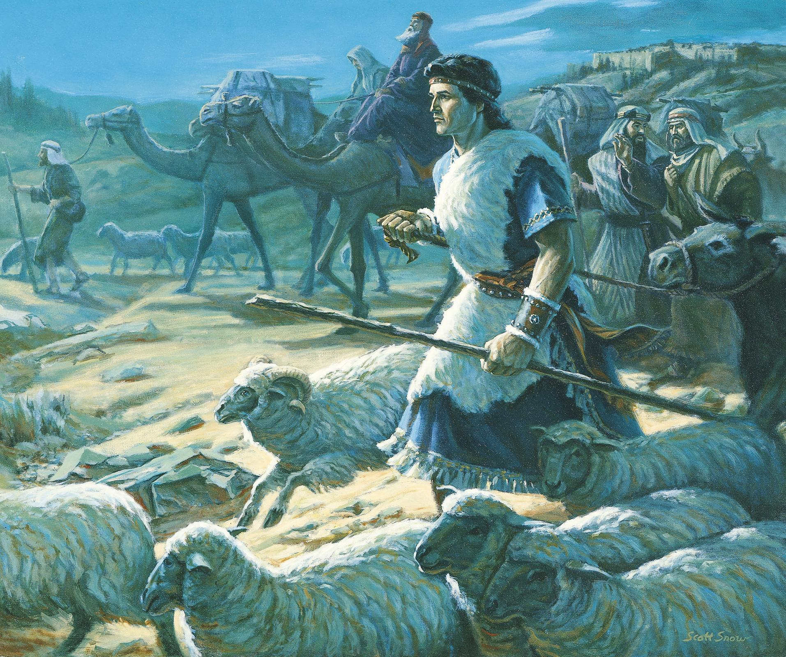
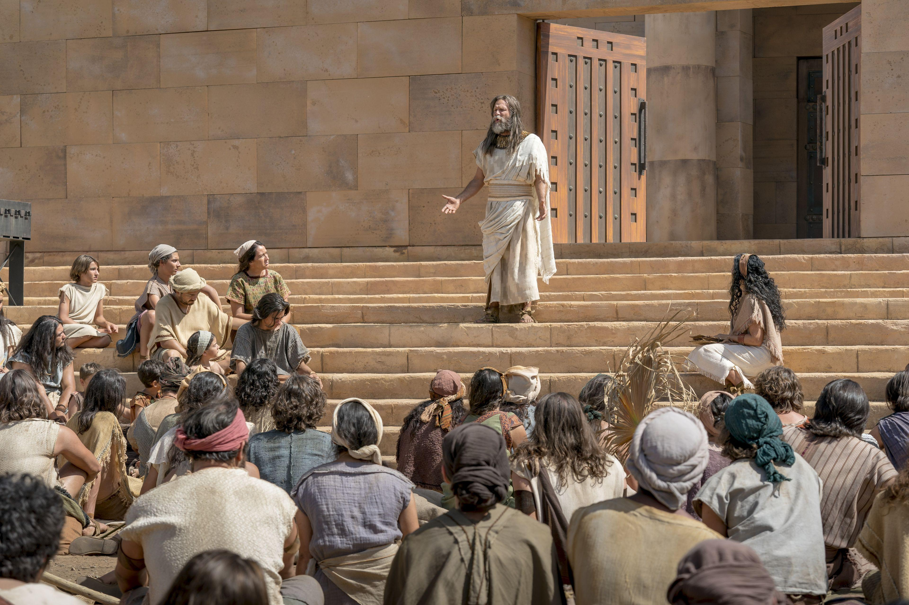
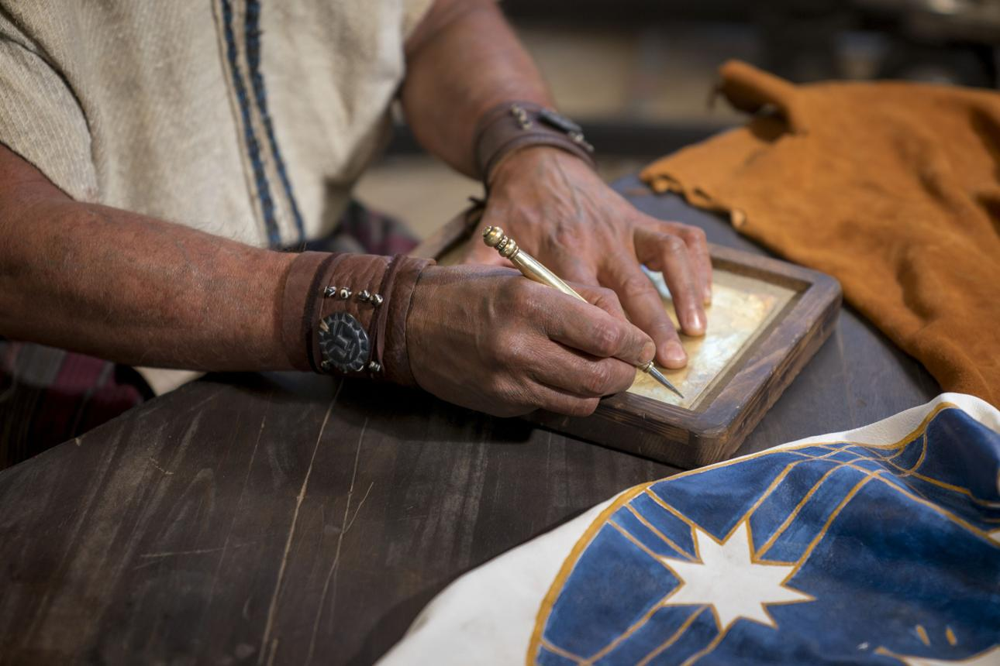

1 Nephi 3:7
“I will go and do the things which the Lord hath commanded…”
Exodus 14:14
“The Lord shall fight for you, and ye shall hold your peace.”

Jacob 2:18-19
“Before ye seek for riches, seek ye for the kingdom of God…”

Omni 1:26
“Offer your whole souls as an offering unto him…”
Mosiah 2:17
“When ye are in the service of your fellow beings ye are only in the service of your God.”